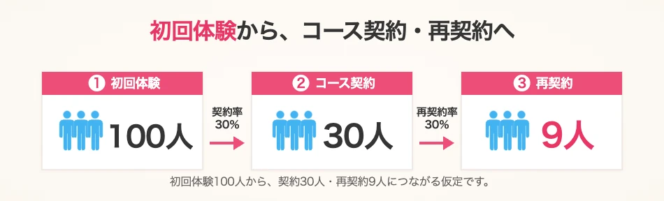
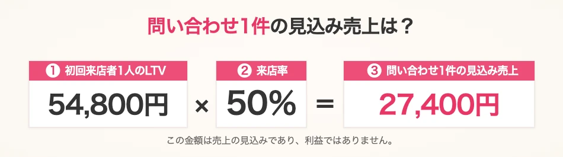
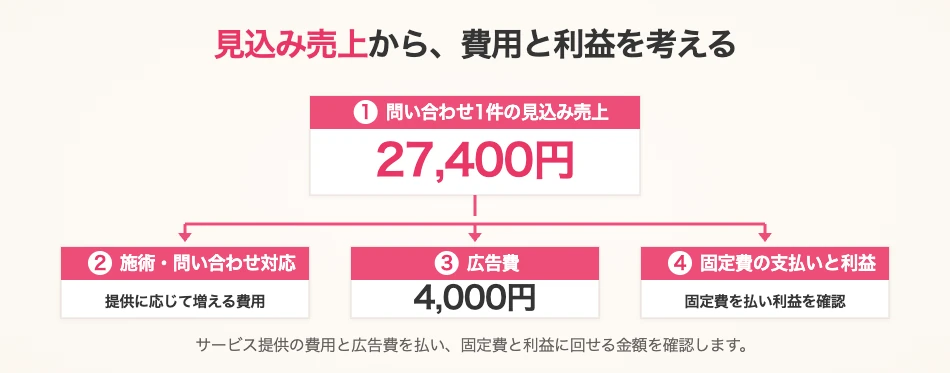

「8,000円の体験に、広告費8,000円。それでは利益が残らない」。脱毛サロンから、実際にこのようなご相談をいただきました。
問い合わせ1件の広告費は4,000円。しかし来店するのは半分なので、来店1人あたりでは8,000円です。初回売上は広告費でなくなり、施術や問い合わせ対応の費用もかかります。
ZEROは「広告を止める前に、その後のコース契約まで含めて計算しましょう」と提案しました。予約に空きがあり、受け入れる余力があったからです。空いていても家賃や固定給はかかり、広告を止めれば、新しいお客様との接点も減ります。
体験から本コースへ進む「アップセル」、希望に合うホワイトニング・ネイル・マッサージなど別サービスを提案する「クロスセル」。施術や接客に満足し、通い続けていただければ、取引全体の売上は変わります。ただし、追加の費用も含めて採算を確かめる必要があります。
継続・再契約まで積み上げ、顧客1人のLTVを計算する
ここからは、この相談を基に、料金や契約率を説明用に設定した仮例です。初回体験8,000円、その後の12回コースは12万円とします。
初回来店100人のうち30％の30人が契約し、その30人のうち30％の9人が1回再契約したと考えます。

初回来店100人から生まれる売上の仮例| 取引 | 計算 | 売上 |
|---|
| 初回体験 | 8,000円 × 100人 | 80万円 |
|---|
| コース契約 | 12万円 × 30人 | 360万円 |
|---|
| 再契約 | 12万円 × 9人 | 108万円 |
|---|
| 合計 | 初回来店100人分 | 548万円 |
|---|
548万円 ÷ 100人 ＝ 1人あたり54,800円。これが今回の「売上ベースのLTV（顧客生涯価値）」です。顧客1人との取引全体で見込める売上を表し、体験だけの方も継続する方も含めた平均です。
初回体験はコース12回とは別で、再契約1回までを計算しています。別サービスや上位プランの追加売上は含めていません。また、将来の取引を含むため、当月の売上ではありません。
通販のリピート・定期購入、スクールの継続受講、法人契約の更新・追加発注も同じ考え方です。初回だけで判断せず、その後の取引まで積み上げます。
問い合わせ1件の見込み売上から、使える広告費を考える
問い合わせの50％が初回来店するなら、54,800円 × 50％ ＝ 問い合わせ1件あたり27,400円の見込み売上です。来店しなかった方も含む平均であり、利益ではありません。

このページでは、広告費を問い合わせ数で割った金額を「CPA（問い合わせ単価）」と呼びます。来店1人の獲得単価、最終的な契約1件の獲得単価とは、分母が違います。
CPA4,000円に対して売上見込みが27,400円でも、差額がそのまま利益にはなりません。サービス提供・問い合わせ対応の費用を払い、家賃や固定給などをまかなう分と、残したい利益を確保する必要があります。

その条件を踏まえ、問い合わせ1件の獲得に使える広告費の上限を決めます。これが「許容CPA」です。LTVは広告費の上限ではなく、上限を考える出発点です。売上ベースのLTVと、費用を差し引く粗利ベースの計算は区別し、人件費などを二重に差し引かないようにします。
1クリックに使える広告費を決め、実際の単価と比べる
広告1回のクリックにかかる費用が「CPC（クリック単価）」です。クリックから問い合わせに至る割合が分かれば、1クリックの価値と、使える金額を考えられます。
- 1クリックの見込み売上 ＝ 問い合わせ1件の見込み売上 × 広告クリックから問い合わせへの割合
- 許容クリック単価 ＝ 許容CPA × 広告クリックから問い合わせへの割合
ここでは別の仮例として、費用と残す利益を計算した結果、許容CPAを4,000円と設定できたとします。広告クリックから問い合わせへの割合が2％なら、4,000円 × 2％ ＝ 許容クリック単価80円です。
先ほどの見込み売上27,400円を使えば、同じ2％で1クリックの見込み売上は548円になります。しかし、548円まで広告に使えるわけではありません。採算の判断で実際のCPCと比べるのは、費用と利益を織り込んだ許容クリック単価です。
この80円は、先の実績CPAをそのまま上限にしたものではありません。自社の来店率・契約率・再契約率と費用を使い、不足する情報は仮定と分けて計算します。実際の反応が分かったら、見込みも更新します。